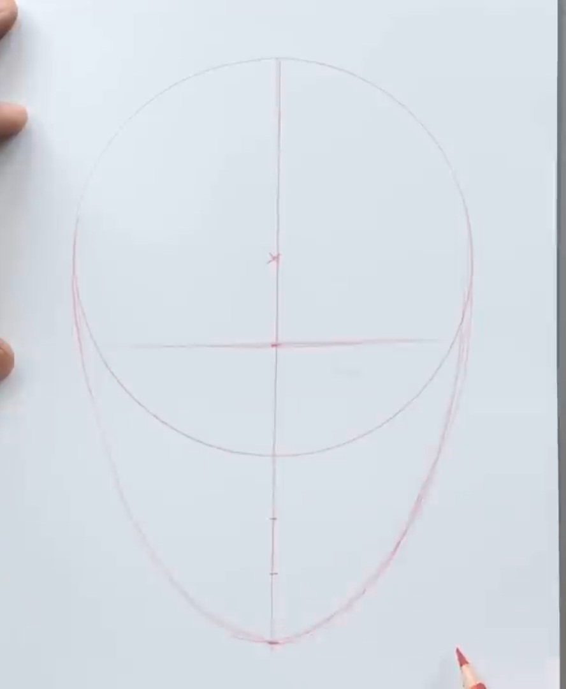

Course #4: Drawing the Face
Hello and welcome to this course on face proportions! Understanding proportions is key to bringing balance and harmony to your drawings. If you’ve completed the previous lessons on individual facial features, this course will help you bring them all together seamlessly. By the end, you’ll be able to sketch the proportions seen below. Let’s begin!

Step #1: Draw a circle

Start by drawing a circle. Add a small cross or dot in the center to mark the reference points for the eyes and face's symmetry.
Step #2: Draw a Vertical Line
Draw a vertical line from the top of the circle, extending below it. This line splits the face in half and helps with the alignment of features.
Step #3: Create the Jawline
Draw an oval shape for the jaw, connecting the bottom of the circle to the vertical line. This will form the outline of the face.
Step #4: Add the Eye Line

Draw a horizontal line through the middle of the face structure, marking the eye line. This is where the eyes will be placed.
Step #5: Position the Eyes
Sketch the eyes along the eye line. Make sure the space between the eyes is the same size as the width of one eye. This keeps the proportions accurate.
Step #6: Position the Nose
Draw three circles along the vertical line just below the eyes, marking where the nose will go. These circles represent the basic shape and size of the nose.
Step #7: Draw the Lips Line
Draw a line for the lips, just below the nose. This line indicates the position of the lips. As you can see, the sides of the lips generally align with the corners of the eyes, providing a natural balance and helping to position the lips symmetrically within the facial structure.
Step #8: Finalize the Drawing
Now, apply the skills you've learned from the past courses to the face and refine your drawing. Place the features correctly, adjust any details as needed to create a realistic human face. Congratulations! You've completed your first face drawing!
Step #9: Shading the face
Shading adds depth and realism to your drawing by emphasizing the structure of the face. The placement of shadows depends on the light source. For example, if the light is coming from above, shadows will appear under the nose, lips, chin, and around the eyes. If the light is from the side, one side of the face will be darker, while the other will remain lighter. Above is a chart of different shading examples based on various light sources. Study these to see how light and shadow interact with the face's features. Adding shading carefully can make your drawing feel more three-dimensional and lifelike.